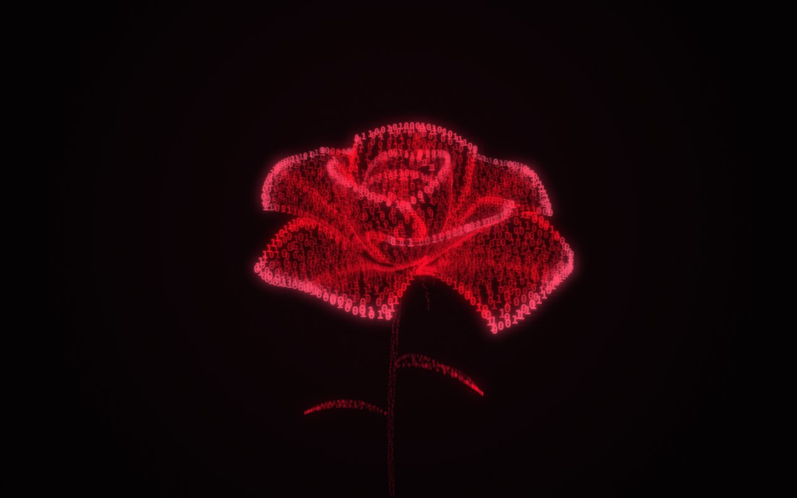

Binary Bloom
Koddan filizlenen bir gül.
Sürükleyerek çevresinde dön
Bu cihazda 3D görünüm açılamadı; gülün durağan hâli gösteriliyor.

Koddan filizlenen bir gül.
Sürükleyerek çevresinde dön
Bu cihazda 3D görünüm açılamadı; gülün durağan hâli gösteriliyor.